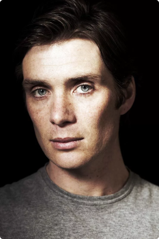
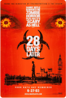

VideoDerby
ФИЛЬМЫ
СЕРИАЛЫ
АФИША
ВОЙТИ

Киллиан Мёрфи
Актёр, Сценарист, Продюсер
Возраст:
44
года (25 мая, 1976)
Место рождения:
Дуглас, Ирландия
Награды:
Золотой глобус(2006), премия MTV...
Жанры:
Драма, короткометражка, триллер
Всего фильмов:
81
Рост:
172
Рейтинг актёра:
4.8
/
5.0
Популярные работы
Бэтмен: Начало (2013)
Пекло(2007)

28 дней спустя(2002)
Дюнкерк(2017)
Острые козырьки (2013-...)
В седрце моря(2017)
Тихое место 2(2020)
Острые козырьки (2013-...)
Интересные факты:
В юношестве мечтал стать рок-звездой
Перестал быть вегетарианцем, ради роли в “Козырьках”
В колледже изучал право
Мог стать Бэтменом вместо Кристиана Бэйла
В колледже изучал право
Часами наблюдал за женщинами ради роли трансвестита
Фото:
Все работы:
Сортировать по:
по популярности
по рейтинку
по отзывам
по новизне
Острые козырьки (сериал, 2013-...)
Актёр (Томас Шелби), Продюсер (11 эпизодов , 2016-2017)
4.8
/
5.0
Дюнкерк (2017)
Актёр (спасённый солдат)
4.8
/
5.0
Щедрость Перрье (2009)
Актёр (Майкл)
4.8
/
5.0
Тёмный Рыцарь (2008)
Актёр (Скэркроу)
4.8
/
5.0
Показать больше...